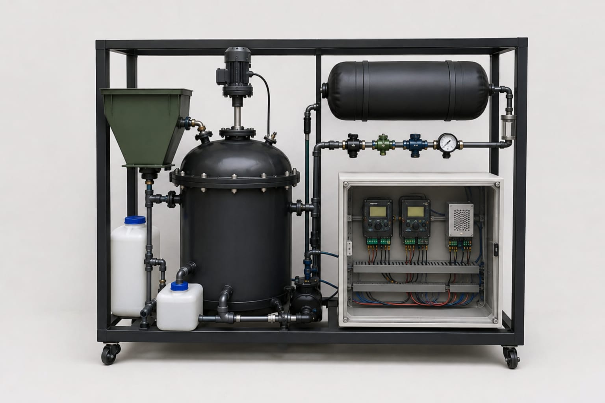

We transform organic waste from a disposal problem into a measurable energy resource using anaerobic digestion, IoT monitoring and AI-based closed-loop control.
v2.1 FIXED 06 Sep 2026 • 18M tons food waste/yr Egypt • 81-82% power from gas imports — Prototype pending pilot validation

~18M tons food waste/yr (UNEP 2024). 80-88% ends in open dumps — methane, disease vectors, lost resource.
Business plan §781-82% of Egypt electricity is gas-based. Imports, volatility, carbon risk.
§4 Energy ValueFood Waste → Pre-processing → Anaerobic Digestion → Biogas → Energy → IoT+AI Data. Waste becomes auditable kWh.
Digestate → bio-fertilizer after validationOurs = Biogas + IoT + AI + Automation + Safety + Data — monitor → analyze → control → optimize, mechanical safety never depends on software. Tech stack →
| Digester | 18 L HDPE, gas-tight, insulated |
| Working | 12-14 L |
| Mix/Heat | Gear motor + paddle, heater, 35°C |
| Gas | 5-10 L bladder, non-return, relief, arrestor |
| Sensors | DS18B20x2, MQ-4, MQ-136, MPX5010, JSN-SR04T, pH, opt NDIR |
| Control | 2× ESP32-WROOM-32, relay, solenoid, buck |
| Safety | Mech. relief (indep.), MQ alarms, PPE, vent, extinguisher |
| Scale | 18 L → 60 L → 500 L+ (S/M/L) |
Illustrative defaults (0.10 m3/kg) — replace with pilot BMP. Measure, then monetize.
LTV ≈ 2.5× hardware alone. Priority: Universities → Restaurants/Hotels → Food processing → Agri-ops.
We ask “How much waste do you generate daily?” — then we pilot, then propose ROI from real data.
Supervisor: Dr. Mariam Ahmed Sameh
Institution: El Sewedy University of Technology — Energy Engineering 2025/2026